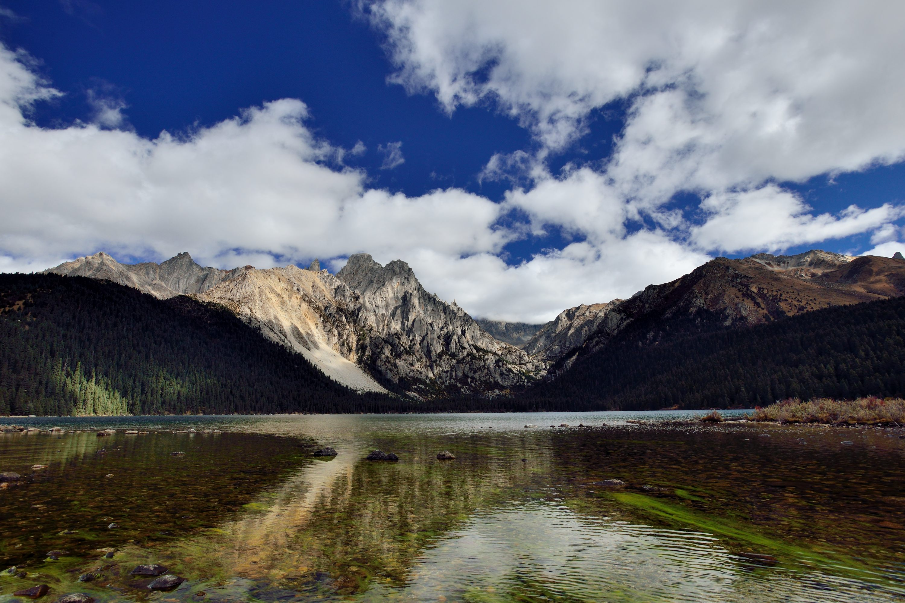

核心圣湖 · 喊泉奇观
措普湖与扎金甲博神山（喊泉喂鱼）
清澈透亮的琉璃碧湖倒映着扎金甲博神山的嶙峋岩峰。站在湖边木栈道大声呼喊或击掌，成群的高原裸鲤会神奇地游聚到岸边抢食；草甸上成群的野生土拨鼠不怕人，可用饼干安全互动。
📸 趣味体验： 备一点面包碎或小饼干喂鱼与土拨鼠，与萌宠零距离合影，老少皆宜乐趣十足。

清澈透亮的琉璃碧湖倒映着扎金甲博神山的嶙峋岩峰。站在湖边木栈道大声呼喊或击掌，成群的高原裸鲤会神奇地游聚到岸边抢食；草甸上成群的野生土拨鼠不怕人，可用饼干安全互动。
数十个天然地热泉眼在河谷中白汽升腾、汩汩喷涌。泉水最高温超 90℃，当地藏民在此售卖生鸡蛋（10元3个），装在小网兜里浸入滚烫沸泉中煮 8 分钟即可享用软嫩温泉蛋，还可免费在泉水溪流中泡脚解乏。